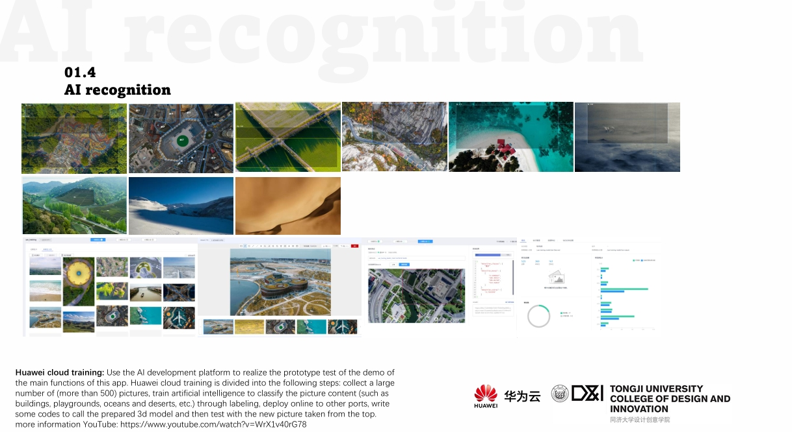

City of Sky：An AIGC-UAV based world exploring game system
This is an interactive design between human and UAV, through UAV overhead shooting + AI recognition and generate 3d models+ user independent editing model + online 3D community platform, to construct a metaverse by people all over the world. People can overview the different model generate by others and set up their own society. UAVs have a unique YOUTHFUL TEMPERAMENT. Also the feeling of UAV taking off has a very similar image correlation with breaking away from the old life and entering a new experience. The world modeled by UAV aerial photography has naturally become a place we have explored in the game / social network, belonging to ourselves. It can also be regarded as collecting this part of the world and punching in this part of the world.
This is the mock up application design for City of Sky.
Year：2021.